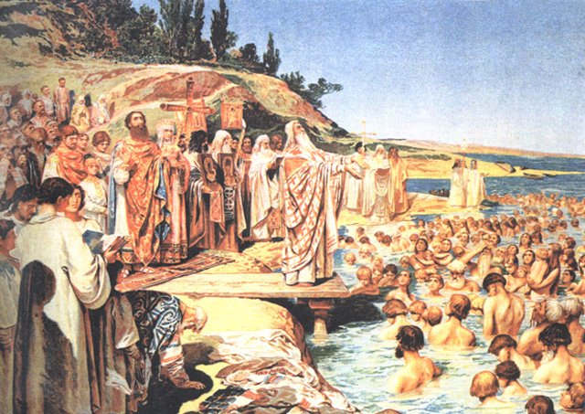
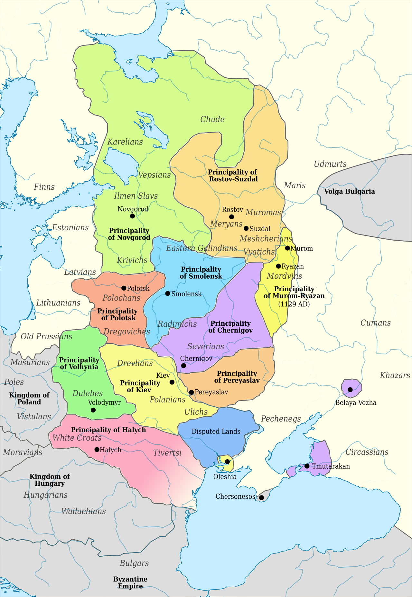
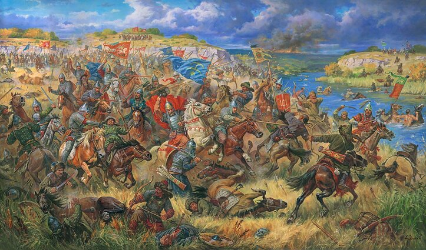
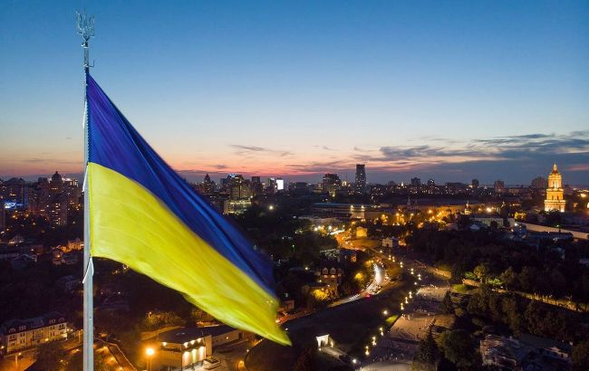
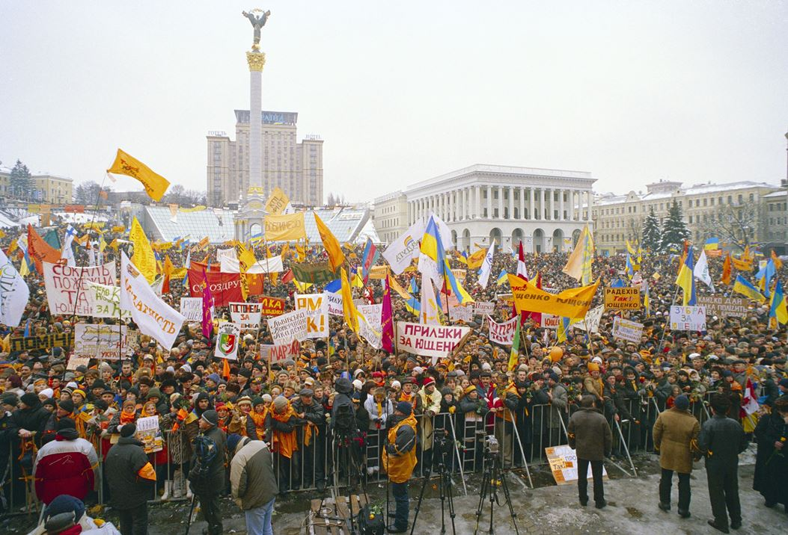
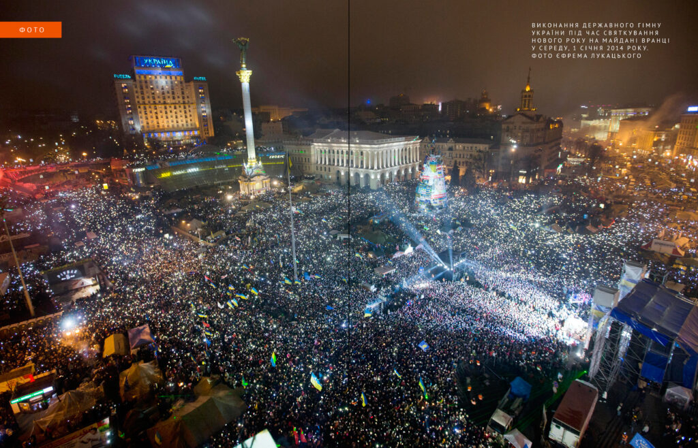
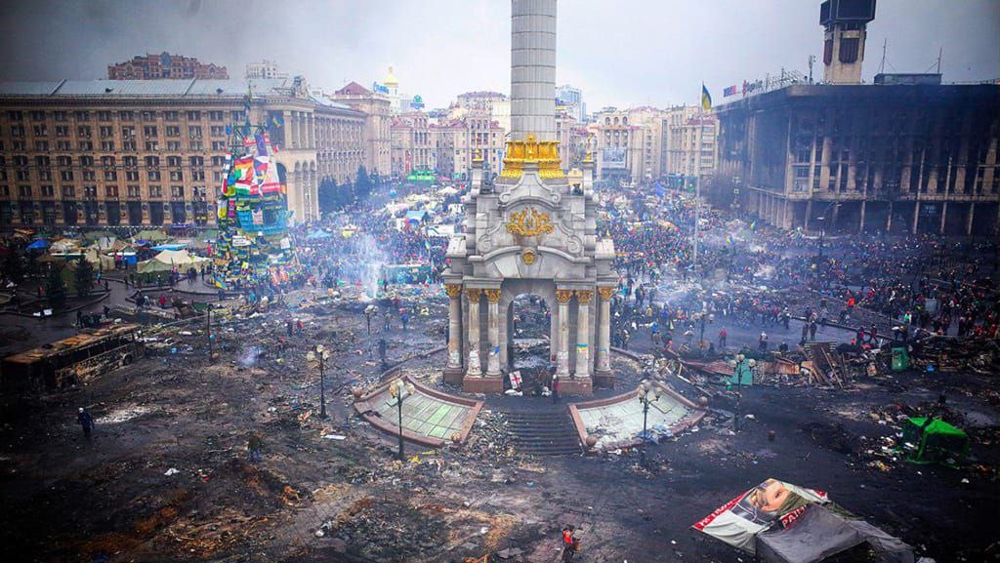
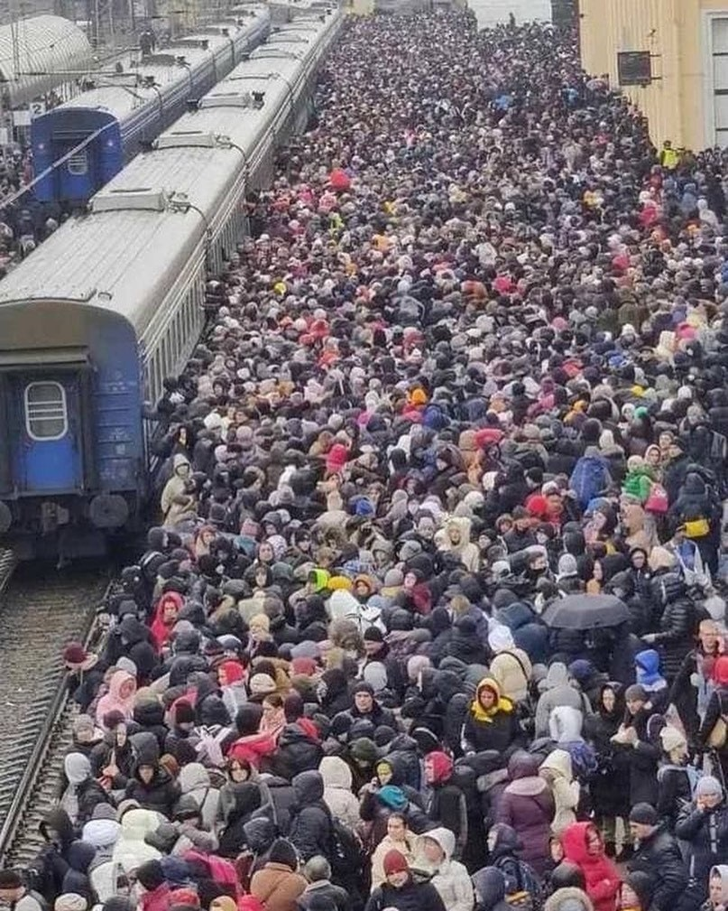

History
Discover a legacy of resilience, rich heritage, and the epic journey that shaped our nation.
The beginning
The history of Ukraine dates back to the 9th century with the formation of Kyivan Rus, a powerful state founded by Prince Oleg. The first references to our land are recorded in chronicles that describe the reigns of Princes Igor, Olga and Svyatoslav. It was during this period that the foundations of Ukrainian culture, language and statehood were formed.
Baptism of Kyivan Rus, 988 AD
Golden Era
From the 10th to the 14th century, the territory of modern-day Ukraine was a significant part of Kyivan Rus’, one of the most powerful states in medieval Europe. During the 10th and 11th centuries, Kyivan Rus’ experienced a golden age under the reigns of Grand Princes like Volodymyr the Great, who Christianized the state in 988 AD, and Yaroslav the Wise, who promoted education and codified laws.
Territories of Kyivan Rus 10-12 centuries
However, internal strife and fragmentation in the 12th century weakened the state, making it vulnerable to external threats.
In the 13th century, the Mongol invasion led by Batu Khan devastated the region, bringing Kyivan Rus’ under the dominance of the Golden Horde.
By the 14th century, the western and central Ukrainian lands came under the control of the Grand Duchy of Lithuania and later the Polish-Lithuanian Commonwealth, marking the beginning of new cultural and political influences in the region.
Right at that time, our biggest problem was created:
At the end of the 13th century Muscovy was founded. By that time we have already had different enemies all around our border, so one colonizer was a bit extra.
Endless Fights
From the tenth to the early twentieth century, Ukrainian lands were the scene of confrontation between various states and empires. After the decline of Kyivan Rus, the territory of Ukraine came under the rule of the Principality of Galicia-Volhynia, and later in the 14th century - the Grand Duchy of Lithuania. After the Union of Lublin in 1569, most of the Ukrainian lands became part of the Polish-Lithuanian Commonwealth, which led to social and religious tensions between the Ukrainian population and the Polish gentry.
The fight on Yellow waters, 1362 year
In the mid-seventeenth century, Bohdan Khmelnytsky led the National Liberation War against Polish rule, which led to the creation of the Cossack state, the Hetmanate.
In 1654, the Treaty of Pereyaslav with the Tsardom of Moscow was signed, which was intended as a military alliance but later led to the gradual loss of autonomy and the integration of Ukrainian lands into the Russian Empire. Should have learnt that moscovy do not obey any rules and ignores its own obligations.
From that time, Russian Empire started the assimilation process, trying to erase all mentions of Ukraine and it’s identity.
Throughout the eighteenth and nineteenth centuries, Ukrainians fought to preserve their culture and language under the pressure of Russification and Polonisation. After the partitions of the Polish-Lithuanian Commonwealth, the western Ukrainian lands came under the rule of the Austrian (later Austro-Hungarian) Empire, where a national revival emerged.
“Till the last bullet” painting of Ukrainian insurgency
After the First World War and the collapse of empires, Ukrainians attempted to regain their independence by establishing the Ukrainian People's Republic and the Western Ukrainian People's Republic. However, due to military conflicts with Bolshevik Russia, Poland, and internal contradictions, these states failed to hold on. By the outbreak of World War II, Ukrainian lands were divided between the Soviet Union, Poland, Romania, and Czechoslovakia, but the desire for independence remained unchanged.
Fun fact: the majority of fights during the Second World War were held on the Ukrainian and Polish land. That’s why lots of cities were destroyed, fields were burnt therefore economics decreased.
Another fun fact: The war was started both by Germany and Soviet Union:
“On 23 August 1939 the Soviet Union signed a non-aggression pact with Germany which included a secret protocol that divided Eastern Europe into German and Soviet "spheres of influence", anticipating potential "territorial and political rearrangements" of these countries”
– Wikipedia says.
Soviet Occupation
One word about Soviet occupation of Ukraine.
During the Soviet occupation, Ukrainians suffered brutal repression in the struggle to preserve their national identity. One of the most tragic pages was the Holodomor of 1932-1933, an artificially created famine that led to the deaths of millions of people by stealing the food from all people in villages. This act was aimed at suppressing the peasantry and resistance to collectivisation.
Holodomor victims, 1933
During this period, the Soviet government systematically banned everything Ukrainian: language, culture, and traditions.
The Slovo House in Kharkiv, where leading Ukrainian writers and intellectuals lived and worked, became a symbol of this pressure.
There was a hidden bugging system all around the house. Many of its residents were repressed, arrested or shot as part of a campaign against ‘Ukrainian bourgeois nationalism’.
The documentary film was made based on that tragedy.
The MYR band created videos and the whole album, take a look and maybe that songs would be added to your playlist.
Despite the persecution, Ukrainians continued to resist.
The insurgency, in particular the Ukrainian Insurgent Army (UPA), fought for independence and against Soviet rule until the 1950s.
This movement was a manifestation of the nation's indomitable spirit and desire for freedom.
Independent Ukraine
Since gaining independence in 1991, Ukraine has faced numerous challenges on its path to becoming a sovereign state. One of the main challenges has been to overcome the pro-Russian narratives inherited from the Soviet past that still influence society and politics. These narratives create obstacles to national development and integration with the European community.
Ukrainian Flag in the capital, Kyiv
In 2004, the country experienced the Orange Revolution, peaceful protests against electoral fraud that became a symbol of Ukrainians' desire for democracy and justice.
Orange Revolution, Independency Square, Kyiv, 2004
Ten years later, the Revolution of Dignity, a massive pro-European protest and revolution started. It was from November 2013 to February 2014 and began when President Viktor Yanukovych suspended signing an Association Agreement with the European Union, opting instead for closer ties with Russia. This decision angered citizens seeking European integration, democratic reforms, and anti-corruption.
People singing anthem, beginning of Revolution of Dignity, Kyiv, Ukraine, 2014
Protests started on Kyiv’s Independence Square, where students and activists peacefully demonstrated. After a brutal crackdown on students on November 30, hundreds of thousands took to the streets, demanding the government’s resignation, justice for the violence, and the restoration of the European course.
Protesters set up a tent city on Maidan, built barricades, and formed self-defense units. Maidan became a center of civic activity, hosting rallies, concerts, lectures, and discussions about the country’s future.
Reaction of pro-russian government on peaceful meeting
In January 2014, authorities adopted "dictatorial laws" restricting civil liberties, escalating the conflict. Clashes between protesters and security forces on Hrushevskoho Street resulted in the first activist deaths.
The city center after smoke grenades
The bloodiest events occurred in February 2014, with over 100 people killed on Maidan and surrounding streets, known as the Heavenly Hundred. This led to international condemnation and a loss of support for Yanukovych.
On February 22, Yanukovych fled the capital and the country. The Verkhovna Rada removed him from office and appointed a new government. Early presidential elections were held in May 2014.
Nowadays
February 24 all the country woke up to explosions. Just as it was multiple times in the past, Russia (again) invaded Ukraine.
As of October 2023, approximately 17% of Ukraine's territory is under the occupation of the Russian Federation. This includes the Autonomous Republic of Crimea, annexed in 2014, as well as parts of Donetsk, Luhansk, Zaporizhzhia and Kherson regions.
The occupied territories as of 17/11/2024
The war has forced millions of Ukrainians to flee their homes. According to the United Nations High Commissioner for Refugees (UNHCR), more than 5 million Ukrainian refugees were registered in Europe as of October 2023. In addition, about 7 million people have become internally displaced within the country.
The rail station in East of Ukraine, February ‘22
Over 5 million of Ukrainians were forced to leave the country and now relocated in EU. Infrastructure is being destroyed every day, russia aims to people, not only to army and vehicles, as theirs aim is to demoralize people to force to sign unfavourable (for Ukraine) terms of negotiations.
But we are strong, we keep fighting. Take a look to losses of Muscovites for the entire war since 02.2022:
Statistics from General Staff of the Armed Forces of Ukraine
Humour is with us no matter what. It helps us to survive depressions and stress. Ukrainian twitter consists of memes made for latest events. Throughout the history we used to have jokes written in newspapers, there were separate collections of jokes made by people or writers.
The main point that our history is showing is that we are strong, and we can overcome any obstacles, even with an area of 17 million square kilometres, as we did at least 3 times in the past.
We are grateful for the help of Europe and the USA, their help gave us the chance to survive this time.
Just remember: in case anything goes wrong – the Poland would be next, and then Germany, Czech republic etc.
Ukrainian national idea – leave us alone.
Please, support Ukraine to bring victory closer and defeat our common enemy.
Trident – emblem of Ukraine